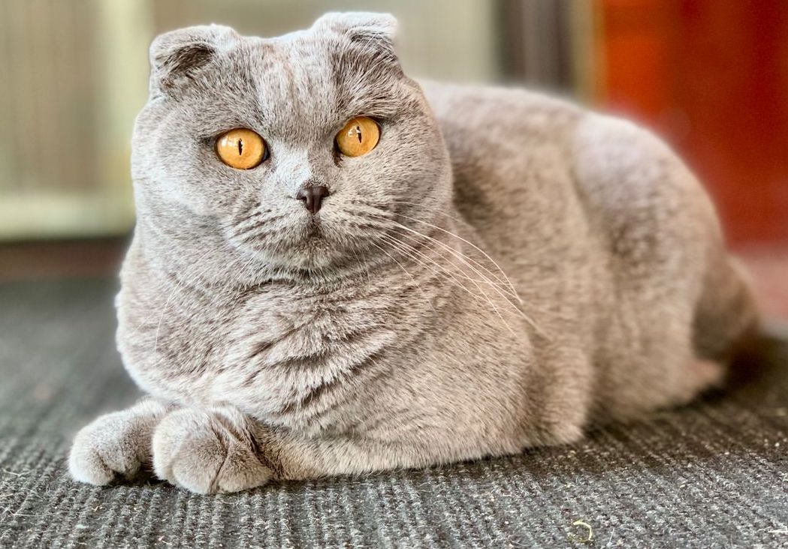

Порода Шотландская вислоухая кошка
- Название породы: шотландская вислоухая кошка (скоттиш-фолд).
- Страна происхождения: Шотландия / Великобритания.
- Вес: 4–5 кг.
- Высота в холке: до 30 см.
- Средняя продолжительность жизни: до 15 лет.
- Средняя цена: 5–20 тысяч рублей.
Внешний вид
У представителей этой породы приземистое тело с хорошо развитой мускулатурой. Лапы мощные и не слишком длинные. Шея короткая, голова довольно большая и округлая, с крепким подбородком и круглыми подушечками усов. Хвост обычно средний или длинный, заострённый к концу.
Чрезмерная милота
Большие глаза